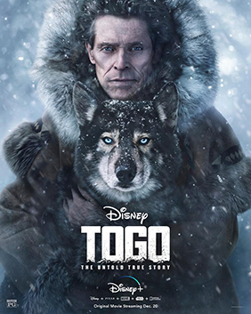

Togo is a 2019 American drama adventure film directed by Ericson Core and produced by Walt Disney Pictures. The film centers on Leonhard Seppala and his titular sled dog in the 1925 serum run to Nome to transport diphtheria antitoxin serum through harsh conditions during an epidemic of diphtheria. The film stars Willem Dafoe, Julianne Nicholson, Christopher Heyerdahl, Michael Gaston, Michael McElhatton, Jamie McShane, Michael Greyeyes, Thorbjørn Harr, Shaun Benson and Nikolai Nikolaeff. It was released on Disney+ on December 20, 2019.
The film flashes between musher Leonhard Seppala raising his dog Togo and the 1925 serum run to Nome.
In 1913, Seppala and his wife Constance welcome a newborn Siberian Husky pup. While Seppala insists on immediately retiring him due to his small and weak state, Constance convinces him to raise him with the rest. The puppy Husky turns out to be a handful as he constantly escapes the kennel to usurp Seppala's dog team while he is out training them. After trying to get rid of the Husky twice, Seppala decides to have him run with the others where, to his astonishment, he discovers that he is energetic enough to outrun the other dogs. He decides to call him Togo, after admiral Tōgō Heihachirō, and fully trains him to the point where he successfully wins the All Alaska Sweepstakes, earning both Togo and himself some local fame.
In 1925, a diphtheria outbreak occurs; mostly affecting children. Mayor George Maynard plans to have the serum flown in from Nenana, but this proves to be impossible due to the severity of the weather. Eventually, Seppala is convinced to take Togo and the other dogs to collect the serum and race back. Constance becomes concerned due to Togo being 12-years-old (old for dog age), but Seppala insists on going. Seppala and his team tread through stormy weather and take a break at an outpost where a local doctor named Atiqtalik tells him that Togo is tired. Seppala continues on for miles; taking a dangerous shortcut across the now frozen Norton Sound.
Eventually, Seppala meets up with a fellow musher, Henry Ivanov, who was bringing the serum back and he is able to leave the next day. Seppala and his team head across the Sound again where he is forced to have Togo pull a piece of ice that they are stuck on as the Sound begins to crack apart. Reuniting with Atiqtalik, she tells him Togo is dying. Nevertheless, Seppala gets his team back to Joe Dexter's outpost as he, Togo and team recuperate. The serum is passed off to fellow musher Gunnar Kaasen who arrives back in Nome. A reporter, confusing him for being the sole musher, announces his dog Balto as the hero who saved Nome, disappointing Constance.
Seppala returns to Nome later, where the entire town come to his house to celebrate Togo's success. Seppala later becomes upset when a cured girl named Sally deduces that Togo is dying. Seppala intends to continue training his dogs without Togo (who gained a small injury during the run), but he refuses to stop and chases down Seppala who welcomes him with open arms. Over the next two years, Togo welcomes puppies of his own that prove to be famous in their own right. Togo eventually passes away in 1929 with Seppala continuing to train dogs. A title card at the end reveals that while Balto had received a statue in his honor, Togo is remembered for making the longest run and for being the true hero of Nome.